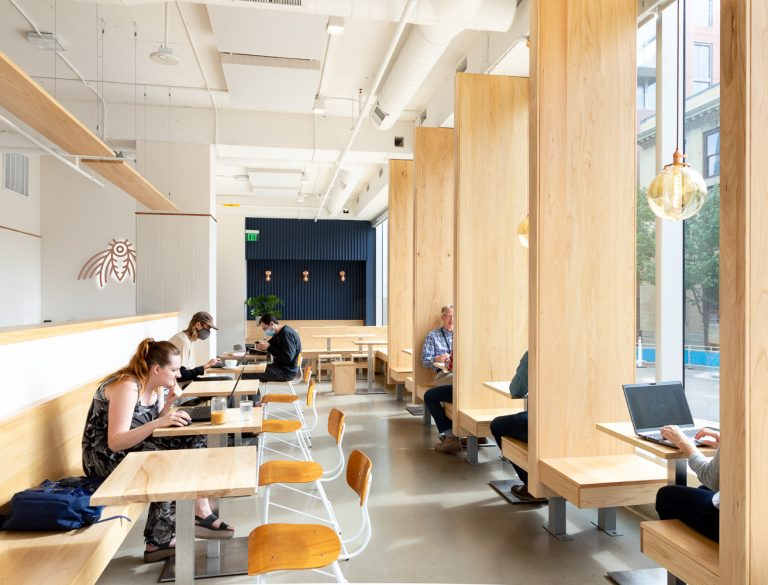
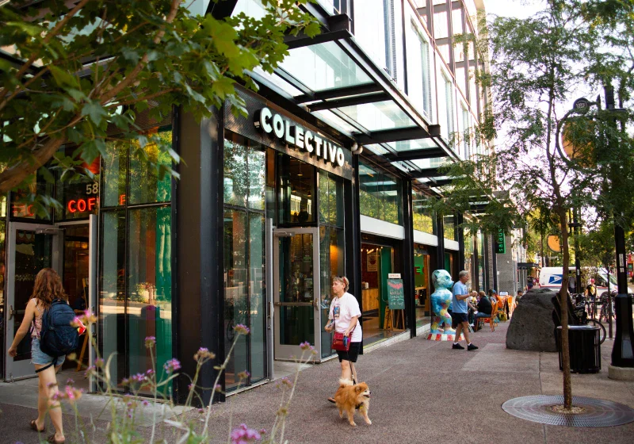
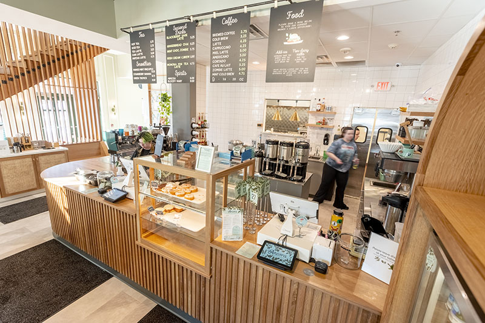

Coffee Shops in Madison I Actually Go To
Personal reviews of cafés I keep coming back to for studying, vibes, and really good coffee.
Get StartedWhat I Look For
Study-Friendly
I like spots where I can stay for a while without feeling rushed and actually get work done.
Atmosphere
The vibe matters a lot to me. A warm, bright space can honestly change my whole mood.
Coffee
If the coffee is consistently good, I will keep coming back. I notice when it’s not just “okay.”
Featured Coffee Shop: Wonderstate
Wonderstate is my favorite coffee shop in Madison because it feels bright and alive the moment you walk in. The space is almost entirely windows, so light comes in from every direction, which instantly puts me in a better mood, especially on long days. The workers know me and I know them, so it feels warm and familiar. On top of that, the coffee is consistently some of the best I’ve had in Madison.
More Coffee Shops I Like
Colectivo
Colectivo is a really nice place to sit and spend time, especially the location on the Square. It stays open for long hours, which makes it convenient. While I think the coffee, matcha, and food can be a bit overrated, the space itself is still a great place to study or hang out.
Ancora
I recently tried Ancora and instantly loved it. The vibe is modern but cozy, and the coffee is genuinely amazing. It’s a place I’ll definitely keep going back to.
Heard enough?
If you’re not sure where to start, Wonderstate is always my top recommendation.
Go to My Top Pick